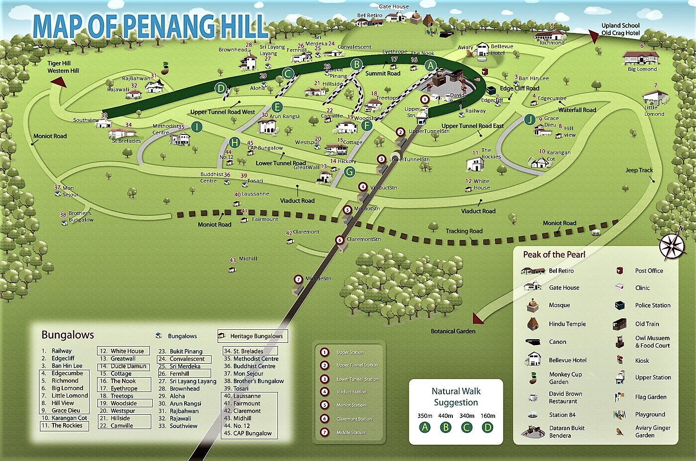
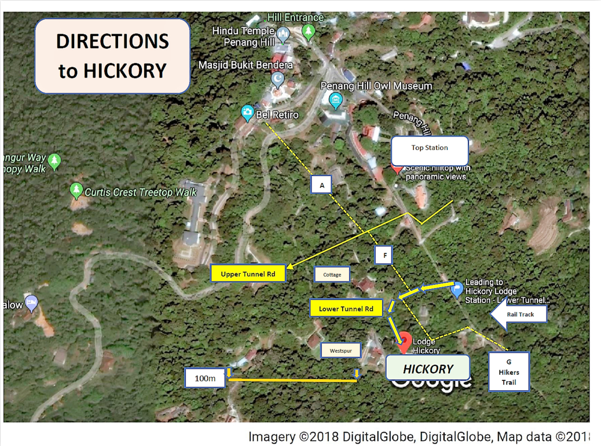

Getting to us might be slightly tricky, but only because Hickory is uniquely located atop Penang Hill, away from and overlooking the bustling city below.
In this page, you will find instructions and directions on how to find your way to us.
As usual, please feel free to contact us if you require any extra assistance or if you have any questions. It is, after all, our responsibility that you arrive here safely.
Directions
1. By Train
From the airport, you can take a taxi to the Penang Hill Railway Lower Station. Once there, you can purchase tickets for the train. Information about station hours and tickets can be found here.
The train ride is an experience in itself. The Swiss-engineered Funicular train travels each way on a regular basis. The 2 cars (at opposite ends of the track) are joined by a cable which goes over a pulleyed mechanism at Upper Station. Both cars move simultaneously on a single track which shunts mid-way to allow them to pass. The only other such rail system in Asia is on Hong Kong's Victoria Peak.
If you are coming by car you can park at Penang Hill Parking before purchasing your ticket.
Alternatively, there is also an open car park nearby.
Take the train and alight at Lower Tunnel Station (stop 3 in the map below). The stopping train service is every half-hour on the hour (except on weekends, when it is every hour on the hour). Make sure you board the front coach and let the driver know that you would like to alight at "Lower Tunnel Station" as the train does not stop there automatically. Remember to retain your ticket for the return journey.
Alight at Lower Tunnel Station, walk for 5 minutes along Lower Tunnel Road and you will reach Hickory (Bungalow "14" in the map below). This route is well signposted, but do feel free to contact us should you need any assistance.
Alternative train stops:
You can also stop at Upper Station (stop 1 in the map below). From there, you walk along bye-paths A & F down to Hickory. It takes around 10 minutes.
Map of Penang Hill:
This map is admittedly a little small. To view a version that you can zoom in on, click here.
The straight gray line that runs through the center of the map from the bottom is the railway, and the fifth red and white circle from the bottom (third from the top) is Lower Tunnel Station (stop 3). Base Station (where you will take the train up the hill) is at the bottom end of the railway line and not shown in the map.

Directions to HICKORY from Lower Tunnel Station & from Top Station:
The map below shows how to get to Hickory from Lower Tunnel Station (via Lower Tunnel Road) or from Top Station (via By-Paths A & F). Click here for a larger map.
{kind=link}
2. By Hike
If you're a backpacker or are feeling adventurous, you can also hike up to Hickory.
There is a hiking trail that starts near Lower Station up to Top Station. The start point of the trail is here.
The trail shadows the railway track at the lower reaches and then moves away, brushing past Hickory enroute to the top. This hike takes around 90 minutes from Base Station to Hickory.
3. By Jeep
Hickory is also accessible by 4-wheel drive vehicles via the Jeep Track that begins at the Botanical Gardens. This access is restricted to residents and staff associated with Penang Hill. We can make special arrangements to ferry guests to Hickory via this route if advance notice is given.
This option is costly, less convenient, takes longer, and is much less fun than by train. However, if you do have members who might not be able to take the train or hike, we encourage you to let us know early such that we can make the arrangements for jeep.
The railway and hiking trails are not clearly shown clearly on Google Maps (although the railway is visible in satellite view). Once you reach Lower Station, you should be able to find your way by asking at the ticket office.
If you need any extra assistance, please do not hesitate to contact us.
We wish you a pleasant and safe journey, and look forward to seeing you at Hickory!